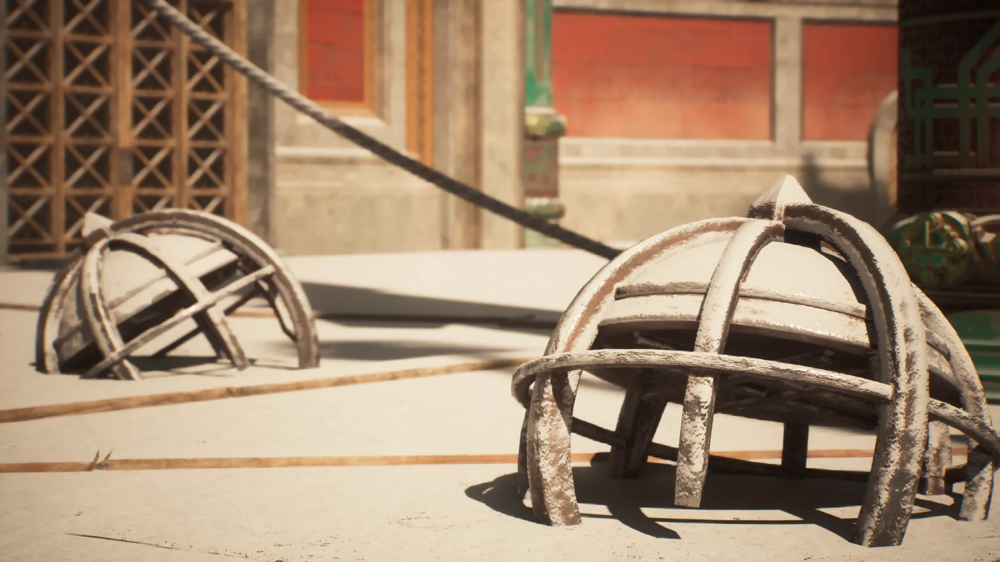
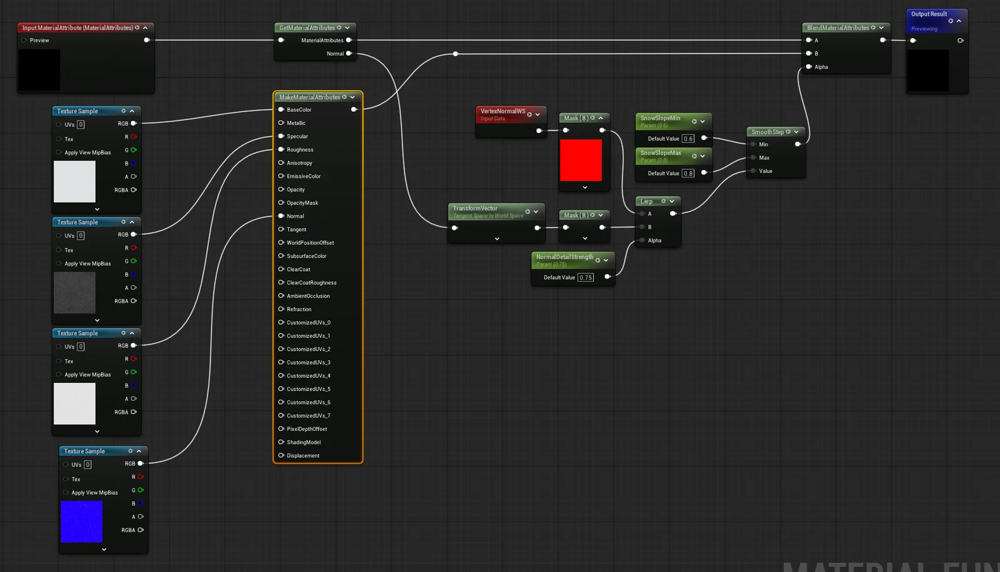
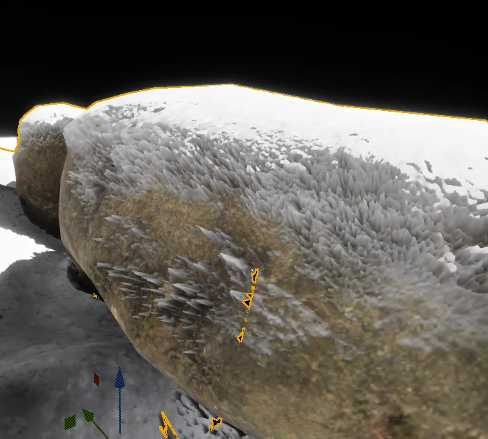
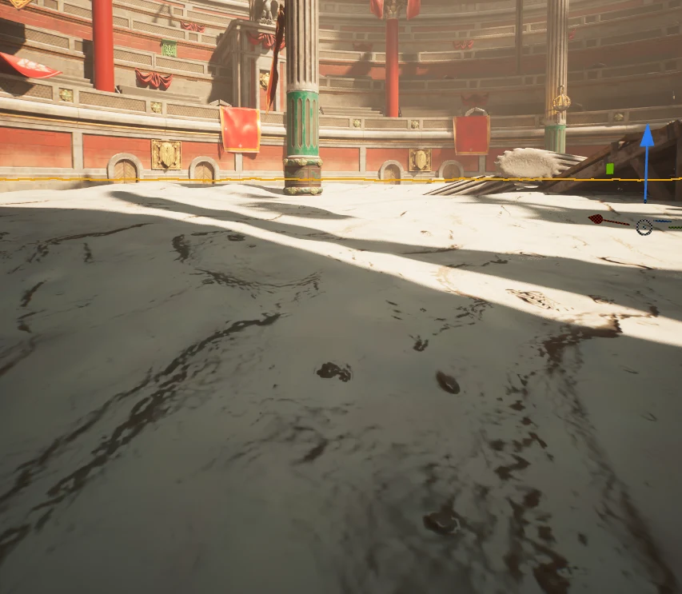

눈이 쌓이는 표면


위를 향한 면에 눈을 얹는 셰이딩에서 시작해, 실제 두께를 만드는 변위까지 실험했다. 같은 눈 마스크라도 색과 지오메트리에는 서로 다른 조건이 필요했다.
이 글은 2026년 8월 29일–9월 2일 작업 로그에서 눈 마스크와 변위 실험을 골라 정리한 기록이다. 당시의 구현과 실패를 다루며, 완성된 범용 눈 시스템을 뜻하지 않는다.
위를 향한 면에 눈을 얹기#
VertexNormalWS의 B 채널과 SmoothStep으로 위쪽 면을 구분했다. 노말맵의 세부 요철은 Tangent 공간에서 World 공간으로 변환한 뒤 마스크에 반영했다.
눈의 재질은 MF_Snow Material Function으로 분리했다. 기존 Material Attributes를 받아 눈과 혼합하므로, 바탕 재질을 다시 만들지 않고 눈 표현을 연결할 수 있다.


처음에는 PixelNormalWS로 마스크를 만들고 Normal 입력에 연결했다. 하지만 이 값은 Normal 입력이 적용된 결과여서 순환 참조가 생겼다. VertexNormalWS를 기준으로 바꾸고, 노말맵을 직접 읽어 공간을 변환하는 방식으로 수정했다.
색과 변위의 마스크 분리#
Nanite Displacement로 눈 두께를 만들자 경사면에 가시가 생겼다. 색에 쓰던 노말 디테일이 변위에도 들어가 있었고, 작은 변화가 표면의 높이 차이로 나타났다.


변위용 마스크에는 VertexNormalWS만 사용하고, 전환 구간도 넓혔다. 색에는 세밀한 변화가 필요하지만, 형태를 움직이는 마스크에는 부드러운 변화가 필요했다.
| 경로 | 사용한 기준 | 목적 |
|---|---|---|
| 색·재질 혼합 | 노말맵 디테일을 포함한 마스크 | 표면의 작은 요철 표현 |
| 변위 | VertexNormalWS 기준의 완만한 마스크 | 급격한 높이 변화 줄이기 |
WPO로 바꾸며 확인한 경계#
노말 방향의 변위는 하드 엣지에서 갈라진 정점을 서로 다른 방향으로 움직였다. 위쪽으로 움직이는 WPO를 시도했지만, 마스크 값이 다르면 같은 위치의 정점도 서로 다른 거리만큼 이동했다.
따라서 지오메트리 눈은 연속된 바닥 표면에 적용하고, 하드서피스 프랍에는 셰이딩 눈을 사용하는 것으로 범위를 나눴다.


WPO = 변위 마스크 × (0, 0, 1) × SnowHeight × 큰 노이즈WPO는 기존 정점을 움직인다. 정점이 적은 평판은 통째로 떠오를 뿐 눈더미를 만들지 못했다. 바닥을 조밀하게 만든 뒤에도 Nanite의 평면 단순화가 영향을 주어, 눈 패치에서는 Nanite를 제외하는 방법을 사용했다.
남은 작업#
눈 두께와 색 마스크를 연동하는 작업이 남았다. 이 실험 이후에는 RVT·VHM 표면과 접촉 RT를 연결하는 눈 발자국 시스템으로 작업을 이어갔다.
이 글에는 해당 실험의 GPU 비용이나 성능 개선 수치를 제시하지 않는다. 캡처는 구현 과정의 결과이며, 조건을 통제한 성능 비교 자료는 아니다.